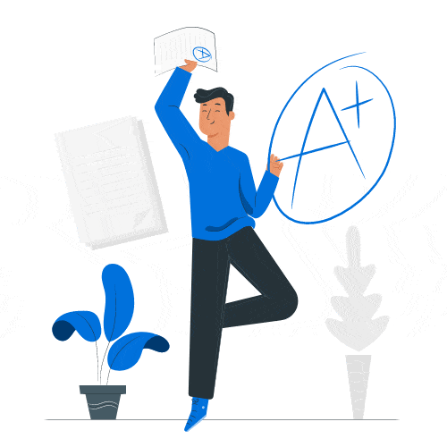

Un organisme d'excellence
Triqna propose un soutien scolaire individuel pour tous les niveaux –à Casablanca comme dans tout le Maroc –du niveau élémentaire au niveau supérieur.
Des vrais résultats
Triqna vous facilite la tâche pour apprendre et réussir votre année scolaire , grâce à un soutien scolaire continu tout au long de l ’année.
